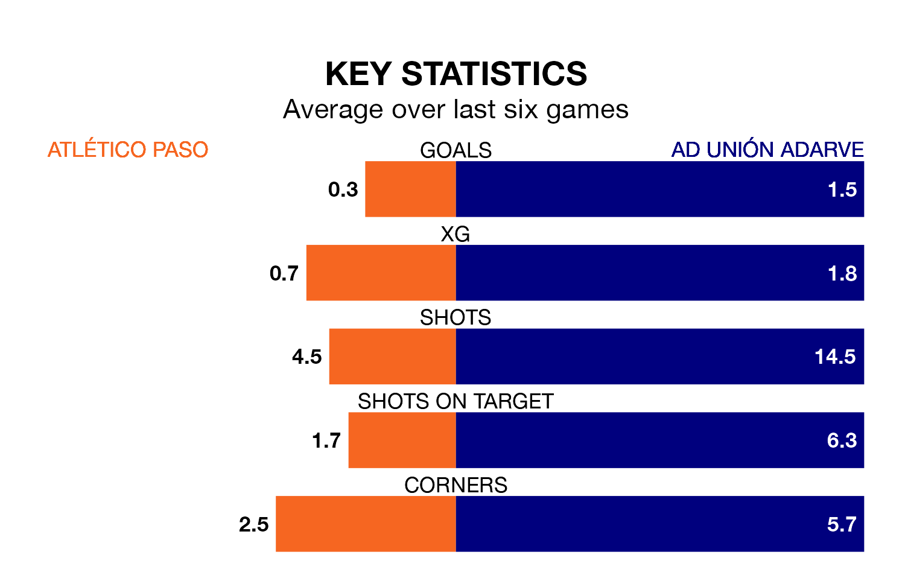

AD Unión Adarve face a challenge to maintain their high-scoring form away against a tight Atlético Paso defence on Sunday.
With 36 goals in 26 games, Unión Adarve are the third-highest scorers in the Segunda División RFEF Group 5 ahead of the 11am kick-off.
They face an Atlético Paso side who have scored 18 in 26 matches, but conceded only 13 goals, putting them top of the league's tightest defences.
Atlético Paso are fifth in the table after 26 games, of which they have won 10 and drawn 10, earning 40 points.
Unión Adarve are three places behind the hosts in eighth, with nine wins and 11 draws putting them on 38 points.
Atlético Paso are in disappointing form in the Segunda División RFEF Group 5, with one win and two draws from their last six games.
With three wins and two draws over that period, the away team's form is much better – they have taken 11 points from 18, compared to Atlético Paso's five.
In the last three years, Atlético Paso and Unión Adarve have played each other on three occasions. They won one each, and they drew once.
Their last meeting was on November 5, when Unión Adarve won 1-0 at home.
Atlético Paso's last match was on March 10, a 2-0 loss against SS Reyes.
Unión Adarve beat Llerenense 2-1 last time out, also on March 10, with Alfredo Sotres Acosta on the scoresheet.
Updated: 15:10 (UTC), 15/03/24